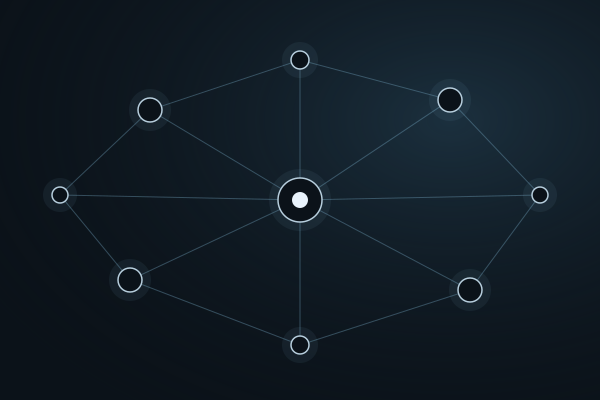
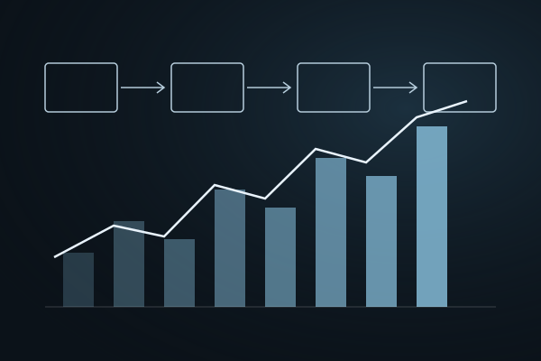

Inteligência artificial · Robótica · Dados
Três caminhos para investigar, aprender e construir.

Agentes inteligentes, memória e orquestração de conhecimento.
Robótica e automação como ferramentas de aprendizagem.

Experimentação preditiva, calibração e avaliação de modelos.